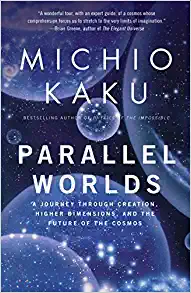
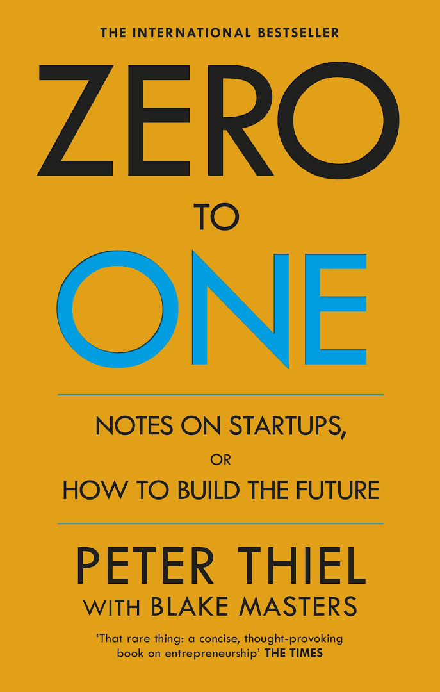
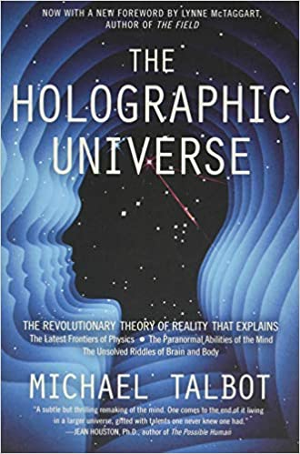

Parallel Worlds: A Journey Through Creation, Higher Dimensions, and the Future of the Cosmos is a popular science book by Michio Kaku first published in 2004.
Zero to One: Notes on Startups, or How to Build the Future is a 2014 book by the American entrepreneur and investor Peter Thiel co-written with Blake Masters.
Nearly everyone is familiar with holograms—three-dimensional images projected into space with the aid of a laser. Two of the world's most eminent thinkers believe that the universe itself may be a giant hologram, quite literally a kind of image or construct created, at least in part, by the human mind. University of London physicist David Bohm, a protégé of Einstein and one of the world's most respected quantum physicists, and Stanford neurophysiologist Karl Pribram, an architect of our modern understanding of the brain, have developed a remarkable new way of looking at the universe. Their theory explains not only many of the unsolved puzzles of physics but also such mysterious occurrences as telepathy, out-of-body and near-death experiences, "lucid" dreams, and even religious and mystical experiences such as feelings of cosmic unity and miraculous healings
